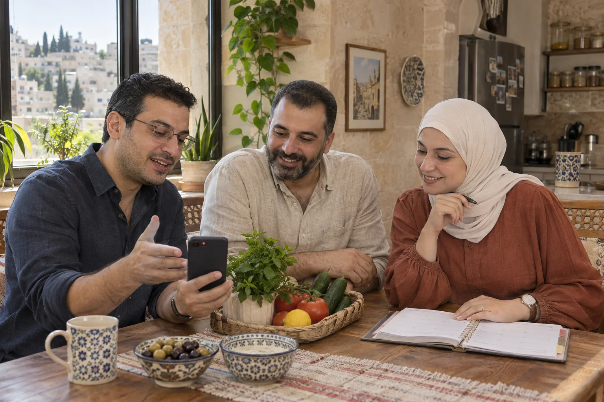

تعلّم تنظيم مؤونة المنزل باللعب
تمرّن مع عبد الله وليلى ومصطفى باستخدام منتجات وهمية. يمكنك إعادة التمرين من البداية في أي وقت.

جرّبوا ما تعلّمتموه في المنزل
اختاروا ثلاثة أصناف معًا. راجعوا أماكنها والكميات المتبقية وحدّدوا ما ستستخدمونه أولًا.
تدرّب قبل إدارة مؤونة بيتك
تشبه أوامر التمرين أوامر التطبيق، مع خطوات مبسّطة. النسخ الاحتياطية في اللعبة محاكاة فقط. لا تقرأ اللعبة بيانات مؤونتك ولا تغيّرها، ولا تنزّل ملفات أو ترسلها. عند إعادة تحميل الصفحة يبدأ التمرين من جديد. يمكنك قراءة أدلة الموقع حتى من دون JavaScript.